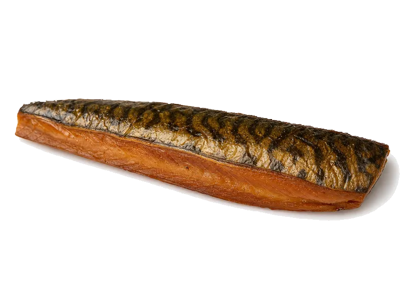

Mięsa i ryby
Makrela wędzona
Makrela wędzona: 18 g białka, 262 kcal, 0 g węglowodanów i 21 g tłuszczu na 100 g. Kategoria: Mięsa i ryby.
Kalorie262 kcalna 100 g
Białko / proteiny18 g
Węglowodany0 g
Tłuszcz21 g
Cena (szac.)~4,59 złza 100 g
Ceny zaktualizowano: maj 2026 (szacunek — ceny w popularnych supermarketach)
Porcja: porcja (100g)
| Kalorie | 262 kcal |
|---|---|
| Białko | 18 g |
| Węglowodany | 0 g |
| Tłuszcz | 21 g |
| Cena (szac.) | ~4,59 zł |
Szczegółowe składniki odżywcze na 100 g
| Wartość energetyczna (kalorie) | 262 kcal |
|---|---|
| Białko (proteiny) | 18 g |
| Węglowodany | 0 g |
| Tłuszcz | 21 g |
| Tłuszcze nasycone | 5 g |
| Tłuszcze nienasycone | 16 g |
| Witaminy i minerały | Omega-3, Selen, Żelazo |
| Współczynnik kcal / 1 g białka | 14.6 |
| Cena produktu (szac. za 100 g) | ~4,59 zł |
| Cena za 100 g białka (szac.) | ~25,50 zł |